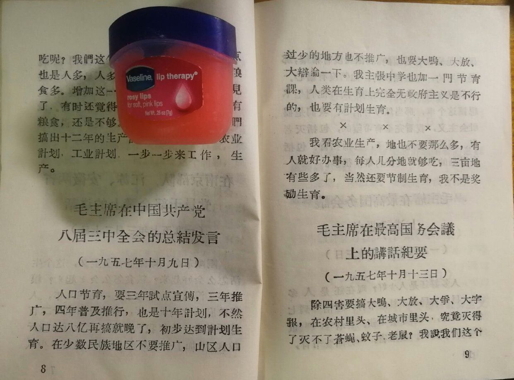
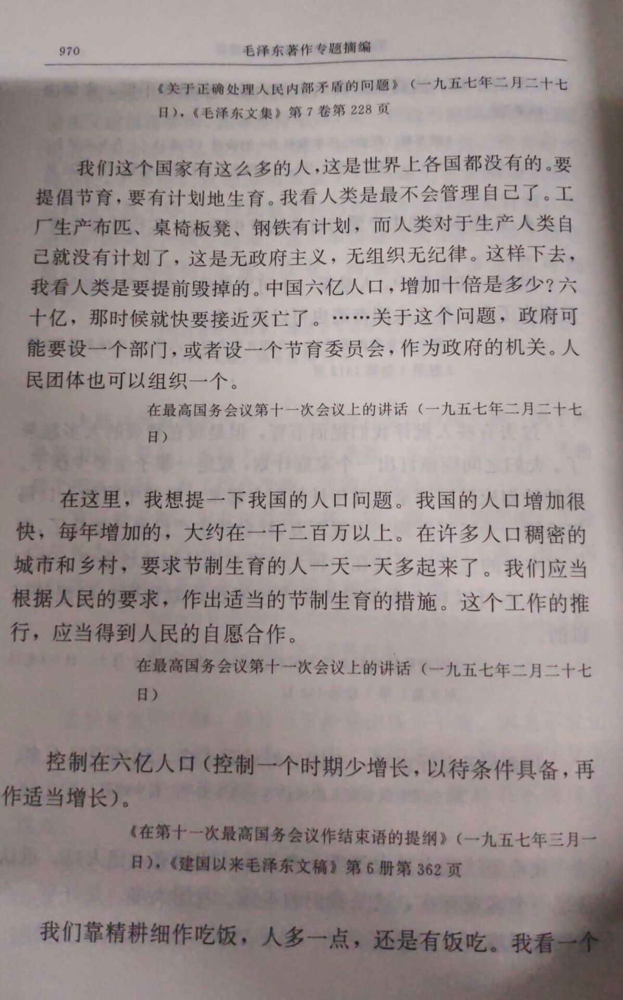
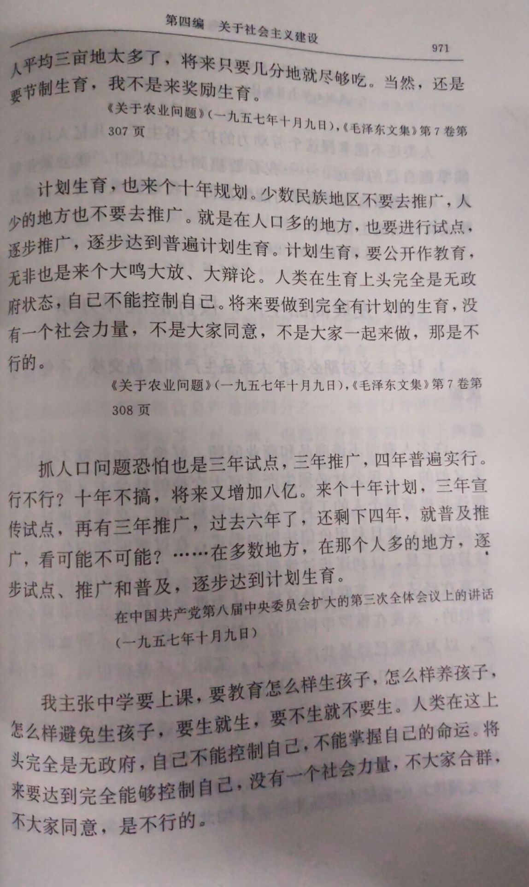
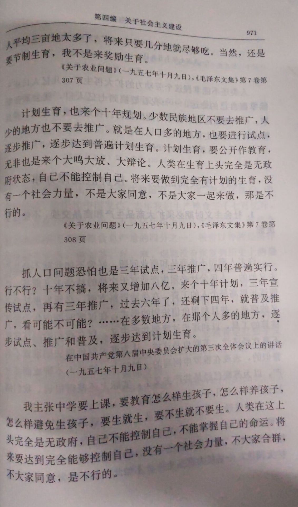
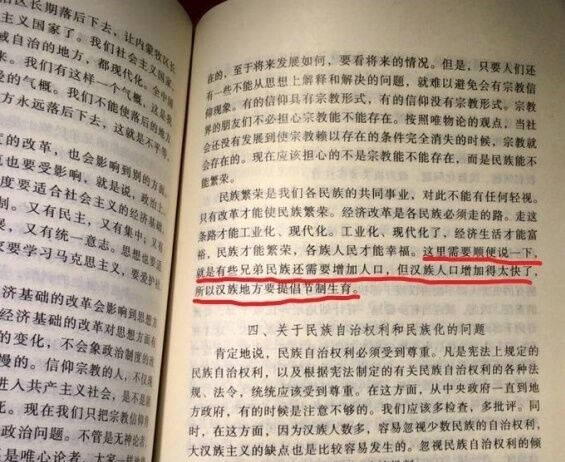

我们的极好条件是有四万万七千五百万的人口和九百六十万公里的国土。我们面前的困难是有的，而且是很多的，但是我们确信：一切困难都将被全国人民的英勇奋斗所战胜。
《中国人民站起来了》（1949年9月21日）、《毛泽东著作选读》下册
西藏地方大、人口少，人口需要发展，从现在二三百万发展到五六百万，然后再增至千几百万就好。还有经济和文化也需要发展。文化包括学校、报纸、电影等等，宗教也在内。过去的反动统治，清朝皇帝．蒋介石都是压迫剥削你们的，帝国主义也是一样，使得你们人口不得发展，经济削弱了，文化也没有发展。共产党实行民族平等，不要压迫、剥削你们，而是要帮助你们；帮助你们发展人口、发展经济和文化。人民解放军进入西藏就是要执行帮助你们的政策。开始进去的时候不会有帮助，三四年之内也不可能有多的帮助，但以后就能帮助你们的，那是一定的。如果共产党不能帮助你们发展人口、发展经济和文化，那共产党就没有什么用处。
《接见西藏致敬团代表的谈话要点》（1952年10月8日）．《建国以来重要文献选编》
中国人多也好也坏，中国的好处是人多，坏处也是人多。
北京现在有三百六十万人口，将来要是有三千六百万人口，北京市市长如何得了。你们将来当了市长怎么办？要安排工作，安排小孩子，解决交通运输问题，那时逛公园也要排队。
在接见全国学联委员时的谈话（1957年2月14日）
在这里，我想提一下我国的人口问题。我国人口增加很快，每年大约要增加一千二百万至一千五百万，这也是一个重要的问题，近来社会上谈这个问题的人多起来了。对于这个问题，似乎可以研究有计划地生育的办法。……并且要得到人民的完全合作。
在最高国务会议第十一次（扩大）会议上的讲话（1957年2月27日）
我们这个国家有这么多的人，这是世界上各国都没有的。要提倡节育，要有计划地生育。我看人类是最不会管理自己了。工厂生产布匹、桌椅板凳、钢铁有计划，而人类对于生产人类自己就没有计划了，这是无政府主义，无组织无纪律。这样下去，我看人类是要提前毁掉的。中国六亿人口，增加十倍是多少？六十亿，那时候就快要接近灭亡了。我今天不着重谈节育问题，因为我们邵力子先生是个专门的名家，他是大学专科毕业的，比我高明。还有我们李德全部长，也很注意这个问题。关于这个问题，政府可能要设一个部门，或者设一个节育委员会，作为政府的机关。人民团体也可以组织一个。因为要解决技术问题，设一个部门，要有经费，要想办法，要宣传。
在最高国务会议第十一次（扩大）会议上的讲话（1957年2月27日）
人口控制在六亿，一个也不多啦？这是一种假设。……现在我国人口每年增长一千多万。你要他不增长，很难，因为现在是无政府主义状态，必然王国还没有变成自由王国。在这方面，人类还完全不自觉，没有想出办法来。我们可以研究也应该研究这个问题。政府应该设立一个部门或一个委员会，人民团体可以广泛地研究这个问题，是可以想出办法来的。总而言之，人类要自己控制自己，有时候使他能够增加一点，有时候使他能够停顿一下，有时候减少一点，波浪式前进，实现有计划的生育。这一条马寅（初）老今天讲得很好，我跟他是同志。从前他的意见没有放出来，有人反对，今天算是畅所欲言了。这个问题很值得研究，政府应该设机关，还要有一些办法。人民有没有这个要求？农民要求节育，人口太多的家庭要求节育，城市、农村都有这个要求，说没有要求是不适当的。
在最高国务会议第十一次（扩大）会议上的讲话（1957年3月1日）
刚刚革命，刚刚搞社会主义，这个生活怎么会好起来？粮食怎么会多起来？粮食多了没有呢？是多了。一九四九年，人民政府成立的那一年，我们只有二千二百亿斤粮食，去年我们就有三千六百多亿斤粮食，增加了一千四百多亿斤。但是多少人吃呢？我们这个国家的好处就是人多，缺点也是人多，人多就嘴巴多，嘴巴多就要粮食多，增加这一千四百亿斤粮食就不见了，有时还觉得没有粮食。一九四九年缺少粮食，现在还是不够。要过好生活，现在我们搞出十二年的生产计划、科学计划、农业计划、工业计划，一步一步来生产、工作。我们年纪大一点的人，这个问题容易懂，青年人可不容易懂，好像他们一到世界上样样要像个样子。因此，要向他们进行教育，要向广大人民群众进行教育，特别是对青年进行教育，要进行艰苦奋斗，白手起家的教育。
在南京部队、江苏安徽两省党员干部会议上的讲话（1957年3月20日）
我看中国就是靠精耕细作吃饭。将来，中国要变成世界第一个高产的国家。有的县现在已经是亩产千斤了，半个世纪搞到亩产两千斤行不行呀？将来是不是黄河以北亩产八百斤，淮河以北亩产一千斤，淮河以南亩产两千斤？到二十一世纪初达到这个指标，还有几十年，也许不要那么多时间。我们靠精耕细作吃饭，人多一点，还是有饭吃。我看一个人平均三亩地太多了，将来只要几分地就尽够吃。当然，还是要节制生育，我不是来奖励生育。
《在中国共产党第八届中央委员会扩大的第三次全体会议上的讲话》（1957年10月9日）、《建国以来重要文献选编》第十册
抓人口问题恐怕也是三年试点，三年推广，四年普遍实行。十年不搞，将来又增加到八亿。来个十年计划，三年宣传试点，再有三年推广，过去六年了，还剩下四年，就普遍推广。看可不可能？少数民族地区不要去推广，人少的地方也不要去推广。就是在人口多的地方，也要进行试点，逐步推广，逐步达到普遍计划生育。计划生育，要公开作教育，无非也是来个大鸣大放、大辩论。我主张中学要上课，要教育怎么样生孩子，怎么样养孩子，怎么样避免生孩子，要生就生，要不生就不要生。人类在生育上头完全是无政府状态，自己不能控制自己。将来要做到完全有计划的生育，没有一个社会力量，不是大家同意，不是大家一起来做，那是不行的。
在中国共产党第八届中央委员会扩大的第三次全体会议上的讲话（1957年10月9日）
计划生育也有希望做好。这件事也要经过大辩论，要几年试点，几年推广，几年普及。
在最高国务会议第十三次会议上的讲话（1957年10月13日）
人多好还是人少好？我说现在还是人多好，恐怕还要发展一点。你现在要人家节育，但我们一是工具不够，二是宣传不够。农民字都不认识，还有早婚的习惯，你强迫他节育，又不行，他不能控制自己。人类还不能掌握这个劳动力的扩大再生产，几亿人口还不能掌握自己的命运。我看要搞到七亿人口，就会紧张起来，邵（力子）先生那个道理就会大兴。邵先生之道大兴之日，是七亿人口到八亿人口之时。你现在讲，他横直不听。但是我并不是说不要做宣传，不要制造工具。要做宣传，要尽可能做宣传。我是赞成节育的，并且赞成有计划地生育的。像日本人一样能控制。现在人多一些，气势旺盛一些。要看到严重性，同时也不要那么很怕。我是不怕的，再多两亿人口，我看问题就解决了。走到极点就会走向反面。现在我看还没有达到极点。中国地大物博，还有那么一点田。人多没有饭吃怎么办？少吃一点。要节省。一方面讲节育，一方面要节省，要成为风气。
在最高国务会议上的讲话（1958年1月28日）
（一）县以上各级党委要抓社会主义建设工作。这里有十四项：1．工业，2．手工业，3．农业，4．农村副业，5．林业，6．渔业，7．畜牧业，8．交通运输业，9．商业，10.财政和金融，11．劳动、工资和人口，12．科学，13文教，14．卫生。
工作方法六十条（草案）（1958年1月）
要破除迷信，“人多了不得了，地少了不得了”。多年来认为耕地太少，其实每人二亩五分地就够了。宣传人多，造成悲观空气，不对。应看到人多是好事，实际人口七亿五到八亿时再控制。现在还是人少，很难叫农民节育。少数民族和人口少的地区可不节育，其他地方可试办节育。一要乐观，不要悲观；二要控制。人民有文化了，就会控制了。
在成都会议上陶鲁笳领发言时的插话（1958年3月23日）
《一个苦战二年改变了面貌的合作社》这篇文章值得一读……由此看来，我国在工农业生产方面赶上资本主义大国，可能不需要从前所想的那样长的时间了。除了党的领导之外，六亿人口是一个决定的因素。人多议论多，热气高，干劲大。从来也没有看见人民群众像现在这样精神振奋，斗志昂扬，意气风发。
《介绍一个合作社》（1958年4月15日）、《毛泽东著作选读》甲种本
埃德加·斯诺：主席对中国计划生育的进程感到满意吗？毛泽东：不满意。在农村还没有推广。最好能制造一种简便的口服避孕药品。
和美国友好人士埃德加·斯诺的谈话（1965年1月9日）
天津计划生育不要钱，看来国家出了钱，实际是划得来的，国家出点钱保护生产力是合算的。药钱拿不起也可以不拿。你们开展农村卫生工作后，要搞节制生育。
接见卫生部负责人时的谈话（1965年8月20日）
埃德加·斯诺（以下简称斯）：现在中国的农业情况很好。毛泽东（以下简称毛）：中国的农业还是靠两只手，靠锄头和牛耕种。
斯：这次来，我去看了一些我十年前参观过的公社。这些公社都取得了很大进步。
毛：现在有些进步了，但还很落后，识字的人还不多，女人节育的还不多。
斯：还是很不错，同十年前或五年前相比较。
毛：说有所进步，我赞成；“很大的”，不能讲。要谨慎。
斯：但是现在没有人反对节育了。
毛：你这个人受人欺骗哟！农村里的女人，头一个生了是个女孩，就想个男孩子。第二个生了，又是女孩，又想要个男孩子。第三个生了，还是女孩子，还想要男孩子。……一共生了九个，都是女孩子，年龄也是四十五岁了，只好算了。
斯：是啊，但是现在反对节育的人不多了，年轻人不反对了。
毛：重男轻女。这个风俗要改。我看你们美国可能也是重男轻女，要有一个时间才能改变。
会见美国友好人士埃德加·斯诺时的谈话（1970年12月18日）
关于避孕工作，我看要送上门去，避孕药物、器械这些东西，免费提供，挨家送，因为人家不好意思来领嘛。人体的八大系统都要研究，包括男女关系这种事情。要编成小册子，挨家送。不然，人家不好意思啊。
与几个同志的谈话（1972年7月24日）
人口非控制不行。
《关于计划生育的指示》、见国家计委《关于一九七五年国民经济计划的报告》（1975年1月25日）




